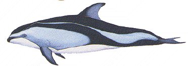

DESCRIPTION - A dark grey or black back broken by white or light grey stripe along the flank characterizes this dolphins colouring. The beak, front edge of dorsal fin, flippers and flukes are dark; the belly white.
DISTRIBUTION - This creature inhabits the entire Pacific range. It is considered a deepwater species but in recent years they have been seen closer to shore and in inland waters. BIOLOGY - This fast, powerful swimmer loves to bow ride and surf; they often leap and somersault. They are nearly always found in groups of less than 50 animals. Primary foodstuff is squid and small fish. This animal is considered common and not endangered; some are harvested for food by the Japanese and several thousand are caught in drift nets and the tuna fishery each year.
